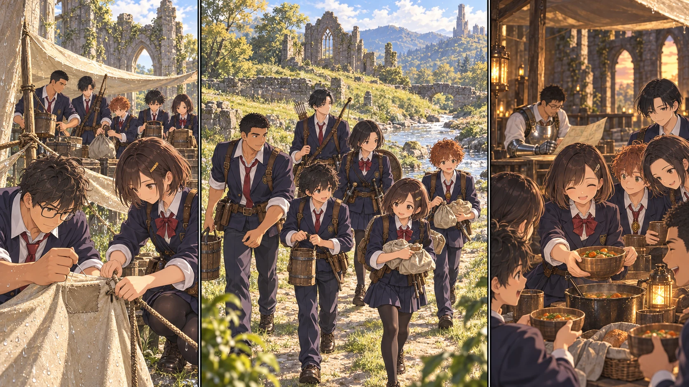

DAY71 / TURN1−81
六人で、明日の分まで。

凛「余った分、じゃないよ。明日の分」
【DAY71｜朝の点検】朝になってから見る天幕の裂け目は、夜の音ほど大きくなかった。誠と楓が端を広げ、使える部分を確かめる。補修用の材料を二十ルーンで足し、風を受けにくい形へ仮留めした。医療用の布には手をつけない。今夜の寝床と、次に怪我をした人のための布は、別に残す。
先生は皆に休息を取らせた。夜に外へ出ていた主力が、明るくなったからといってそのまま仕事へ走る必要はない。第三物資隊も休んでから出発し、昼の既知の道だけを使う。初仕事だから遠くへ行こう、と誰も言わなかった。
【物資C隊｜2d6＋4＝10】航が先に弓を持ち、翼と真央が周囲を見た。凛は荷を持つ者を途中で交代させ、佑真は予定の時刻に連絡を戻す。湊の役目は、火を大きく見せることではない。必要な処理を終え、回復に使う余力を残しておくことだった。
狩りでは三頭分、三十六人分の食料を確保した。矢は六本使った。取水はその後に分けて行い、三往復。処理した水は配給へ回す。獲物を追う人が同じ瞬間に水を運んでいるような計算にはしなかった。六人で、順番を揃えて終える。
二往復目、荷を受け取った真央が少し笑った。「前なら、これ持って戻っただけで終わりだったかも」。身体が強くなった実感は、敵を倒す場面だけに出るわけではなかった。帰ってから、まだもう一度動ける。そこに気づいたのだった。
帰着すると、凛が食料を二つに分けた。今日食べるもの。明日に残すもの。横から「今日は豪勢だな」と言われ、彼女は残す方の袋を引き寄せた。「余った分、じゃないよ。明日の分」。主力が帰ってくるとき、また空の袋を見せなくていいように。
【回復役の点検】葵が紬と湊の聖印を確かめた。赤月では、覚えた回復を使うほどの負傷者は出なかった。使わなかったことを失敗とはしない。紬はA隊で防護と回復を選び、葵はB隊で治療を担い、湊はC隊で火術との配分を考える。三つの隊は、同じ葵一人へ戻ってくる形から少し変わった。
【夕方の残量】三十三人の配給を終えて、食料は八十四人分。保存食六十六、調理した分十八。調理分を先に使い、保存食は遠征へ回せるようにしておく。矢は三百四十二本。残るルーンは九千七百四十一。数字が増えた部分も減った部分も、凛と結衣が同じ紙へ書いた。
先生は隣に王都の地図を広げた。黄金樹の大聖堂へは、主力十三人が戻れる。次に挑むのはモーゴット。今回の赤月を無傷で越えられたからといって、次の戦いまで勝ったことにはならない。それでも出発前に食料を探し回る時間は、今日の六人が減らしてくれた。
教会の外で、軍馬が草を食んでいた。世話は続いているが、まだ戦場へ連れ出す段階ではない。先生はそれを眺めてから、日程の七十二日目へ指を置いた。次の攻略の相談をするために。
今回の判定記録
抽選前の条件 · 抽選結果